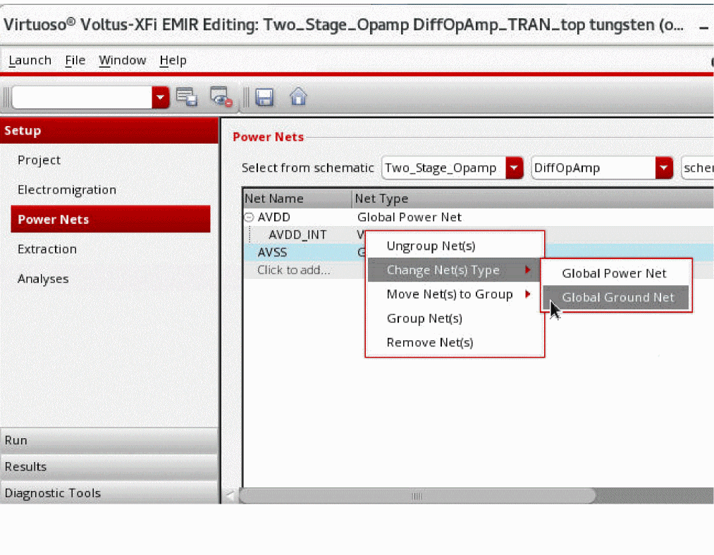

Specifying Power Nets for EM-IR Analysis
To specify the power nets for EM-IR analysis, do the following:
- Choose Setup – Power Nets from the task pane.
-
Select a schematic cell view and click the Open button.
The Schematics window opens in a new tab. -
Select the nets in the Navigator pane of the Schematic window. You must select only those nets that will be in the DSPF.
The nets are automatically added to the Power Nets table in the Voltus-XFi window. - Click the tungsten tab.
- You can select Click to add in the Power Nets table to manually add internal net names that cannot be done using schematic selection.
-
Right-click a net and select an option under Change Net(s) Type to specify it as a global power net or a ground net.

-
For power gated designs, you can select two or more nets and right-click and select Group Nets to create a group of virtual nets associated with a global power net. This option lets you group the global nets and its corresponding virtual nets together.
You can also use the drag-and-drop feature to easily group, ungroup, or change groups of the nets.
Related Topics
Return to top